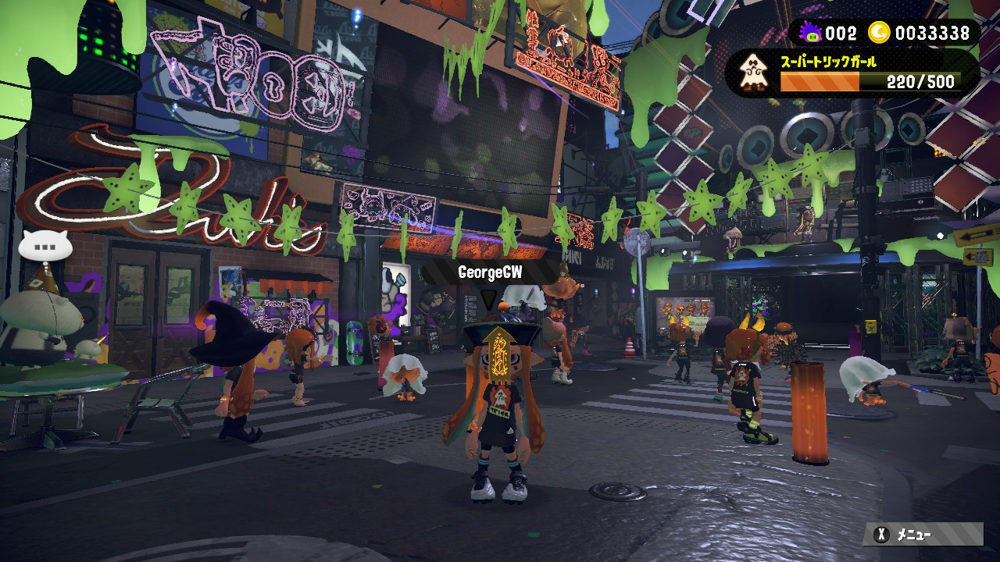

喷射战士
「喷射战士」是Nintendo(任天堂)制作发行的第三人称油彩动作射击类游戏；本作基本上采用4Vs4的方式进行战斗，也搭载了专供单人游戏的“英雄模式(ヒーローモード)”。该模式下玩家们需要为所属的军团战斗，并努力使己方变得更加壮大。

销量
2015年10月，获第33届金摇杆奖最佳家庭游戏。 [1-2] 《喷射战士》全球销量达406万，日本国内销量突破百万。 [3] 这款游戏让任天堂认识到了口碑营销的可能性。 [3] 通过运营方面下的功夫，游戏保持了高启动率和关注度。游戏的FES活动最大有69万人参加。
游玩
本作有线下单人游玩的英雄模式。这个模式里，你将会扮演孤胆英雄(乌贼)与章鱼军团展开关卡制的战斗。 [7] 基本操作与在线模式相同，关卡中新增了各种解密要素、Boss战、终点等等，解密与动作要素完美结合，像是在玩3D的超级马里奥系列(类似《阳光马里奥》的感觉)。 [7] 关卡中收集的鱼籽可以给武器装备升级(当然只限英雄模式)，而每关都还有一份“秘密文件”隐藏在深处等着你去收集。 [7] 单人英雄模式的内容也相当充实。
世代
所有由宝可梦公司监制的正版宝可梦游戏可以大致被分为数个世代。这些世代大致按照发售的年代排序，当主系列游戏在发售时引入了新的宝可梦、角色和游戏玩法时，这一游戏被认为是系列的新一时代。主系列游戏和旁支游戏、动画、漫画和集换式卡片游戏均会在新世代开始之时进行升级